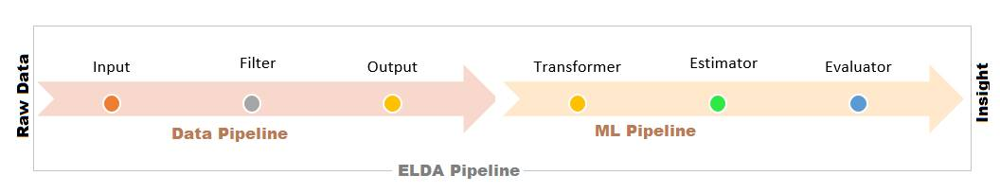
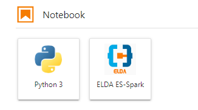
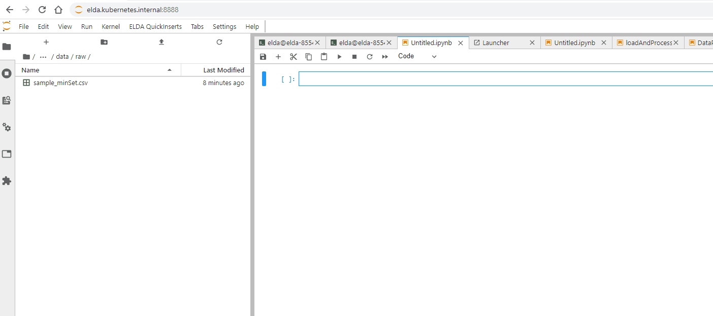
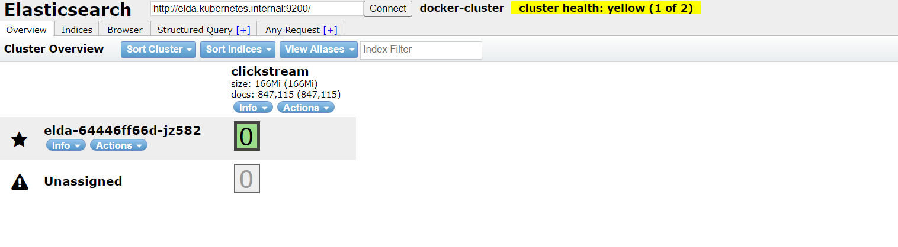
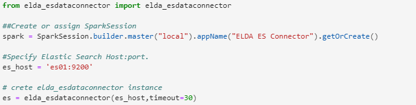
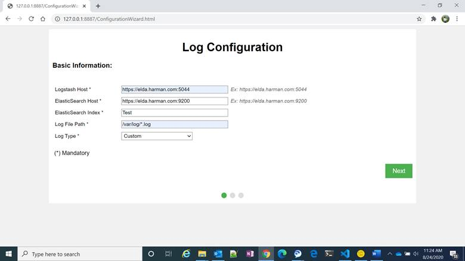
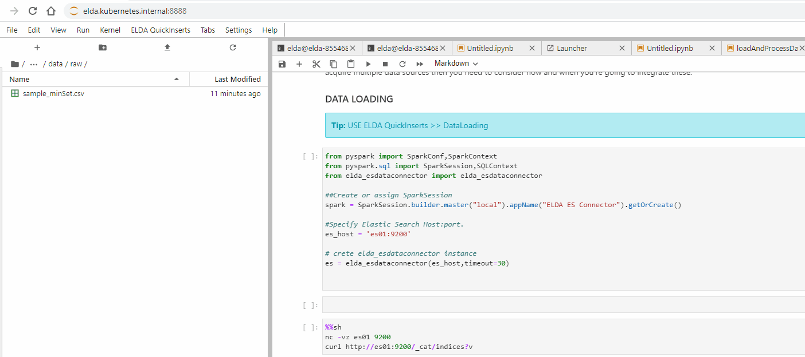

|
Enterprise
Log Data Analyzer ELDA
Technical Know-How & FAQ |
What is the design
goal behind ELDA?
Our goal is not to recreate any services, no need to
reinvent the wheel. But to provide a straightforward way to deploy
best-of-breed open-source systems for data analytics to diverse infrastructures
and use cases. Any use case where you have data and data-driven mindset, you
should be able to use ELDA. But our primary focus is log-analysis. Users will
get all the tools and technology to handle log data, but you are free to
leverage ELDA for any use case.
What design principle
or architecture used in ELDA?
We adopted the pipeline
architecture. Tasks are divided into stages and these stages are connected to
form a pipe-like structure. Instructions enter from one end and exit from
another end. Pipelining increases the overall instruction throughput.
It allows storing and executing instructions in an orderly
process. Pipelining is a technique where multiple instructions are overlapped
during execution. For our purpose when we deal with logs, sometimes we have to back and forth in the, where pipeline increases the
flexibility.
In ELDA we have two clear segregation of this process. Data Pipeline + ML Pipeline

General FAQ document mentioned
ELDA is built using two major open-source systems ELK stack and Apache Spark. Where
these two fits in the above-mentioned design principle?
ELK stack mostly leveraged in the data pipeline, which helps us to onboard and transforms the data. Logstash is the major building block in our data pipeline component. Whereas Apache spark with mllib is used in ML Pipeline.
Is the design modular?
of course, as we have two process segregation we have kept the design module. All the components in ELDA are modular and on a case basis, it can be removed or added.
How Elda will support
scalability, which kind of scaling it support?
It supports vertical and horizontal scaling both. Although vertical scaling is only suggested for single user uses, like prototyping and demo or presentation uses. We strongly suggest for actual data load and for production use horizontal scaling.
How ELDA will scale
horizontally?
Underlying infrastructure is built using ELK and Spark(pyspark+mllib) which is built to scale in nature. And to support these, we have cluster configuration using kubernetes.
So, ELDA need kubernetes to run? Do I need a kubernetes
cluster to run ELDA?
Kubernetes cluster and nodes are not mandatory, here also we are flexible. As per the need even user can run ELDA in users laptop or for a small team it can be setup over LAN. But obviously for a larger and robust setup kubernetes clusters are best. Due to various reason.
What development environment
I will get, do I need to login to some remote cluster machine and need to used
command prompts for development. How I will use the reusable templates of ELDA
mentioned in general FAQ section.
You will get on demand notebook, jupyter notebook. Default you will get Jupyter Lab (But can be switched to Notebook). You can go from prototyping to deployment using Jupyter lab without ever interacting with the command line or additional login to different systems in network.
Why Jupyter Notebook or Jupyter Lab
as Interface?
Jupyter Notebook is a staple tool in many data scientists toolkit even its widely used by data engineers. As a tool, Jupyter Notebook can enhance productivity by making it easier to perform data analysis, model prototyping, and experiments in an interactive way, thus shortening the feedback loop from coding and seeing results.
I am a data scientist,
do I need to stick to ELDA pipeline process, use spark, am I force to use mllib? Can I use some other libraries?
You are not bound to use ELDA pipeline even you are not forced to use spark or mllib. Underlying infrastructure is very much flexible and can be used with custom libs even custom environments.
BUT, Data science is inherently a pipeline workflow, from data preparation, to training and deployment, every ML project is organized in these logical steps. Without enforcing a strict pipeline structure to Data Science projects, it is often too easy to create messy code, with complicated data and code dependencies and hard to reproduce results. ELDA is an excellent environment to drive data scientists to adopt a disciplined (pipelined process) mind set when developing ML code. So we promote to use defined pipeline process.
Okie, how to switch
between spark environment to plain python environment. Do I need to open a new
Notebook? Or need to run some script?
Its easy, its just a click task. With just a snip of mouse click you can switch between Spark or non-spark environment. We have separate kernel for both these environments.

What is the learning
curve for this new Jupyter lab Interface? I am
comfortable with the default juypter Lab do this
interface alter the default behaviors.
We have taken care not to change any default behavior, mostly we have altered back end to support the underlying infrastructure. But we do add some new extensions and plugins to support some new functionality, Those extensions you will see as extra add on.
For e.g, to use reusable templates we have extension called ELDA QuickInsert. Which is available as a new Menu Item in menu tool bar.

I am a data scientist
and never used Elastic search before, how ELDA can help a novice like me to leverage
Elastic Search as data storage?
We have built a few data connectors which will help you to easily connect and retrieve the data from elastic search. If you are a python programmer, you will get python libs for easy connectivity and data loader for elastic search index. Even we have Elastic search browser built top of an open source lib to visualize the ES index (N.B ES browser is part of ELDA Workbench V 2.0 )
Below is the snapshot of beta version:

Python libs for easy connectivity to ES, (N.B More can be found on tutorials)

I am getting comfortable
with Elastic search and got the way how to connect to ES and get the data. How
about loading the data in Elastic search?
We have a wizard bases tool to load the data. Using this tool you can load any kind of data, from structure to un structed. (Please refer tutorial for more details)

Just curious, do I always
need to load data in Elastic search. Even for 100 line of csv? which I used to
load directly in pandas data frame for some quick analysis.
No its not mandate we have few data connectors which can do this job for you, i.e loading local csv or json directly in ur favorite data frame. Even we also have enabled drag and drop files into your jupyter lab so easily any data load can be performed.
